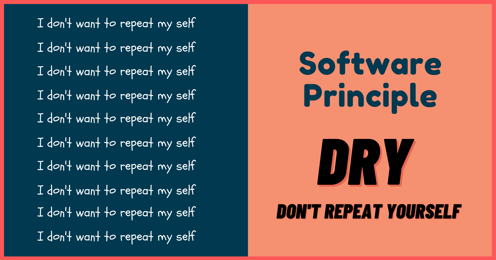

Introduction
What is DRY?

The Importance of DRY
DRY is crucial for several reasons:
- Code Maintenance and Consistency
- Readability and Understandability
- Efficiency and Performance
- Scalability
- Bug Reduction and Debugging
- Code Reusability
- Consistency in User Experience
- Collaboration and Teamwork
Identifying Code Duplication
Here are a few common signs of code duplication:
- Repeated Blocks
- Copy-Pasting
- Similar Functions
Techniques to Achieve DRY
Now that we understand the importance of DRY, let's explore some techniques to achieve it:
- Extract Reusable Functions
- Higher-order functions
- Template Strings
// Before DRY:
function calculateAreaOfRectangle(length, width) {
return length * width;
}
function calculatePerimeterOfRectangle(length, width) {
return 2 * (length + width);
}
// After DRY:
function calculateRectangle(length, width, operation) {
if (operation === 'area') {
return length * width;
} else if (operation === 'perimeter') {
return 2 * (length + width);
}
}
const area = calculateRectangle(5, 3, 'area'); // Output: 15
const perimeter = calculateRectangle(5, 3, 'perimeter');
// Output: 16
// Before DRY:
function applyOperation(arr, operation) {
const result = [];
for (let i = 0; i < arr.length; i++) {
result.push(operation(arr[i]));
}
return result;
}
const numbers = [1, 2, 3, 4, 5];
const squared = applyOperation(numbers, (num) => num * num);
console.log(squared); // Output: [1, 4, 9, 16, 25]
// After DRY:
function multiplyBy(factor) {
return function (number) {
return number * factor;
};
}
const double = multiplyBy(2);
const triple = multiplyBy(3);
console.log(double(5)); // Output: 10
console.log(triple(5)); // Output: 15
const name = 'John';
const age = 30;
// Before DRY:
const greet = 'Hello, ' + name + '! You are ' + age + ' y.o.';
// After DRY:
const greetTemplate = `Hello, ${name}! You are ${age} y.o.`;
console.log(greetingTemplate);
// Output: "Hello, John! You are 30 y.o."
The DRY Pitfalls